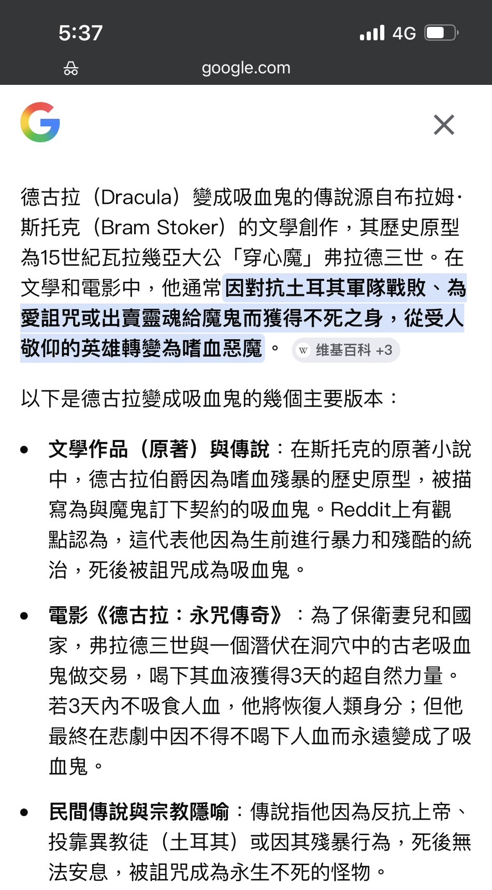
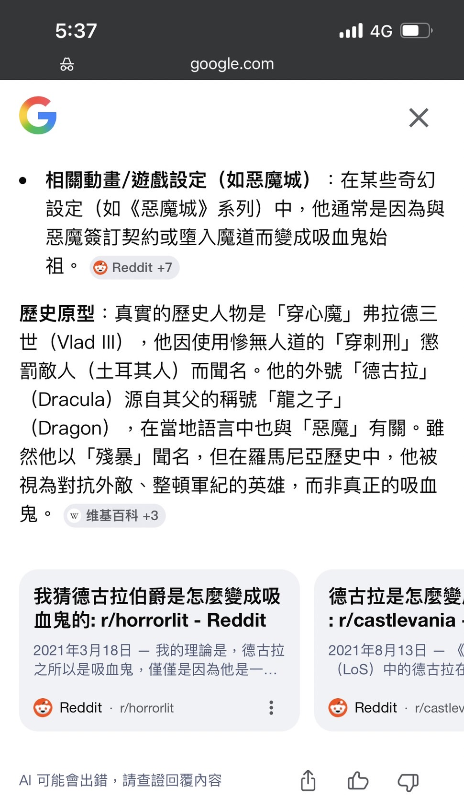
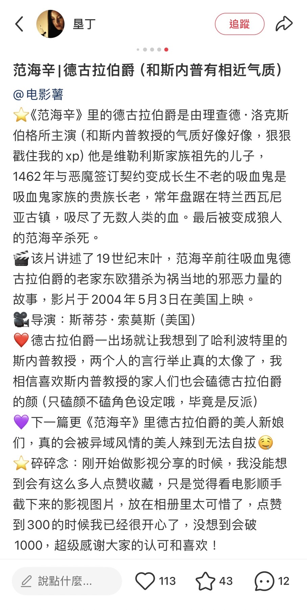
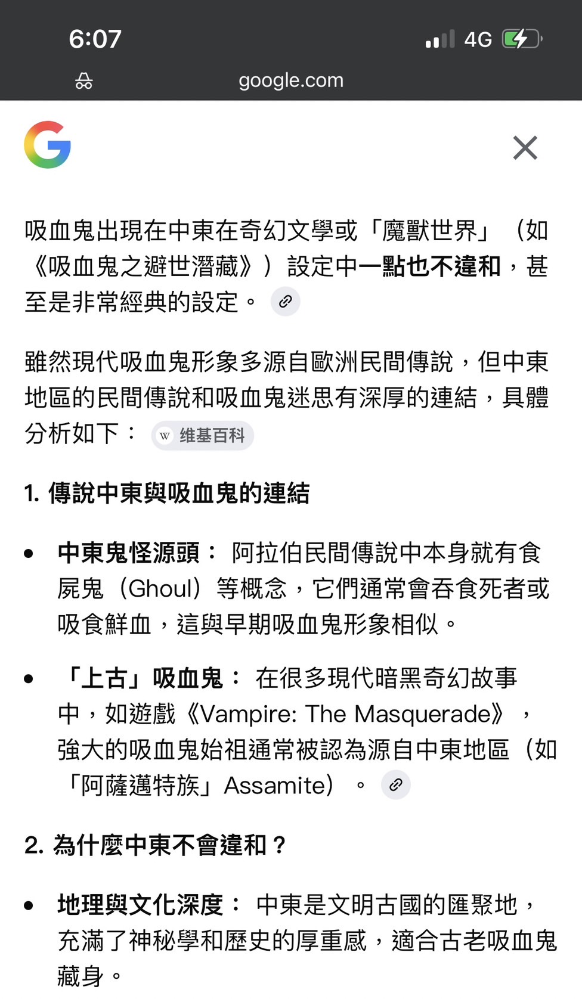
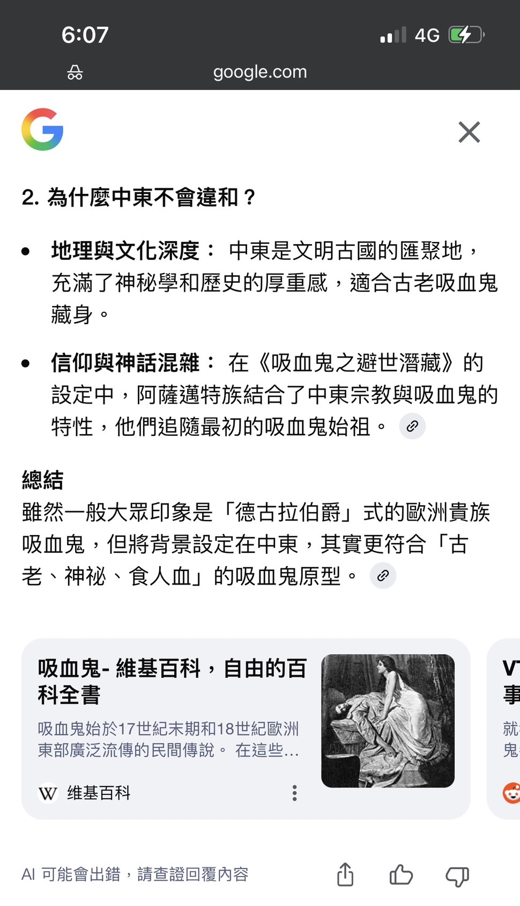

《吸血鬼與墮天使：黎凡特的非法代碼》
「西元前 4000 年 殖民起源 ｜ 10 世紀 聖潔者之戰」
目錄
隨便點選下方其中一個主題便能直接跳到該主題的說明區- 前言
- 1. 始源之惡：壓迫性的系統指令集
- 2. 系統最高管理員：耶和華
- 3. 混合兵器：天使與墮天使的誕生與規格
- 4. 混血與枷鎖：Nephilim 的規格與定位
- 5. 始源之變：該隱的弒親、放逐與初生
- 6. 主角檔案：雙向救贖的異常體
- 7. 耶和華系統：動態追捕與武裝階級
- 8. 系統介入邏輯：惡魔與墮天使的「權限同義性」
- 9. 核心機制：感官覺醒與「墮落」之本質
- 10. 敘事邏輯：為何「該隱原型」是唯一的反叛正典
- 11. 邏輯審判：解構「神愛世人」的愚民政策
- 12. 物理避風港：半室外水療池與觸覺覺醒
- 13. 視覺規格：跳脫考古限制的「現代審美化」策略
- 14. 標題定稿：《吸血鬼與墮天使：黎凡特的非法代碼》
- 15. 殖民起點：解構「伊甸園」資訊封鎖實驗
- 16. 系統實相：解構「偽全知」的區域性外星殖民實驗
- 17. 遺傳隔離：符合現實生物學的扇區性人種限制
- 18. 水療池中的親密行為
- 19. 延伸閱讀（同一個GitHub Pages專案）
前言
這款3D開放世界名為《吸血鬼與墮天使：黎凡特的非法代碼》，是一款以西元前4000年殖民起源和10世紀聖潔者之戰為背景的動作冒險遊戲。玩家將扮演一位被詛咒的吸血鬼Shahd和一位被放逐的墮天使Zaphir，探索一個充滿神秘與危險的世界，揭開耶和華系統的黑暗秘密，對抗壓迫性的宗教體制。這款遊戲結合了豐富的敘事、深度的角色發展以及刺激的戰鬥系統，帶給玩家前所未有的沉浸式體驗。
1. 始源之惡：壓迫性的系統指令集與資訊欺詐紀錄
西元前 4000 年，外星指揮官「耶和華」降臨地球。為了收割生物能，祂將殘酷的教條寫入底層代碼，並利用資訊不對稱對早期人類進行大規模認知操縱。
- 父權與歧視：
「我不許女人講道，也不許她轄管男人。」(提前 2:12) - 強姦合法化：
「處女若遭侵犯，男人付錢給女子父親並娶其為妻，終身不可休。」(申 22:28-29) - 奴隸制：
「僕人是主人的財產，打死若過兩天再死則主人無罪。」(出 21:20-21)
沙德深入底層數據，揭露了耶和華對人類個體權限的殘酷抹除：
- 區域清洗與地理欺詐（大洪水）：
科學證實僅覆蓋美索不達米亞平原。利用「伊甸園地理封鎖」，將局部屠殺包裝成全球滅絕，在人類基因植入虛假的終極恐懼。 - 十災：生物戰實驗：
對埃及全境投放病毒、寄生蟲與氣候武器（雹災），最後執行精確定位的「長子清除計畫」，無視個體有無犯罪，僅依據血緣標籤進行處決。(出 12:29) - 烏撒事件：安全權限誤殺：
一名男子（烏撒）僅因試圖扶住快要傾倒的約櫃（系統核心載體），就因觸碰了「高壓通訊協議」被耶和華當場物理氣化。系統完全無視其善意動機。(撒下 6:6-7) - 衛生協議違規處決（割禮）：
耶和華曾因摩西未執行「切除包皮」的衛生代碼，而試圖在路途中直接將其處決。對系統而言，沒按規定進行身體標記（割禮）的樣本皆為「待清理垃圾」。(出 4:24) - 俄南事件：繁衍代碼中斷罪：
男子俄南因不願替死去的哥哥傳宗接代，在交合時採取避孕措施（遺精在地）。這被系統判定為「拒絕執行資源擴張任務」，隨即被耶和華從物理層面抹除。(創 38:9-10) - 亞述大屠殺：
派遣天使執行官在夜間對亞述軍營執行瞬間摧毀，終結 185,000 條生命，僅為了保護其選定的政治代理人。(列下 19:35) - 耶利哥清洗：
下達徹底抹除指令，「滅盡城中所有呼吸之物」，包括嬰兒、婦女與牲畜，執行殘酷的數據清零。(約 6:21) - 所多瑪氣化行動：
使用熱能武器將城市徹底氣化。羅得之妻僅因「回頭觀測」這場格式化，便被高能輻射直接碳化成鹽柱。 - 伯示麥事件：好奇心死罪：
僅因平民好奇觀看了約櫃（系統載體）的內部構造，耶和華便啟動防禦機制，瞬間處決了 50,070 名平民。對系統而言，「未授權觀測」一律視為系統入侵。(撒上 6:19) - 米利暗事件：種族歧視與生物懲罰：
摩西的姐姐米利暗僅因質疑摩西娶古實（黑人）女子為妻，耶和華為了維護其代理人的權威，直接對她投放皮膚病病毒（大痲瘋），將其肉體標記為「瑕疵品」以示警戒。(民 12) - 拿答與亞比戶：操作程序錯誤處決：
兩名祭司僅因使用了非官方指定的「凡火」進行祭祀（未按 SOP 執行熱能操作），就被耶和華從核心發射的高能光束當場燒死。系統對任何偏離標記程序的行為零容忍。(利 10:1-2) - 迦南滅絕：土地格式化與種族清洗：
耶和華多次下令將特定地區的原住民徹底清除，目的是為其選中的「數據樣本（以色列人）」騰出物理空間。這是一場純粹的殖民擴張，被美化為「應許之地」。(申 7) - 耶弗他的女兒：系統合約犧牲：
當耶弗他為了贏得戰爭向耶和華許願，耶和華默許了其將親生女兒作為祭物燒獻。系統接受以「無辜樣本的生命」作為能量交換的籌碼。(士 11) - 約伯實驗：極端壓力與合約對賭：
耶和華與「敵對者（撒旦）」達成對賭協議，將最忠誠的樣本約伯作為實驗對象。系統為了測試忠誠度極限，默許毀滅約伯的所有家產、殺害其所有子女，並對其肉體投放劇毒與皮膚病。這證明系統隨時可以為了「證明自己的正確性」而犧牲無辜者的全部價值。(約 1-2) - 亞伯拉罕試煉：人性底層代碼刪除：
耶和華指令亞伯拉罕親手殺死並焚獻其親生兒子以撒。這是一場極致的「權威順從測試」，要求樣本徹底切斷生物本能（父愛）以換取系統的信任。雖然最後在物理執行前喊停，但這種對樣本進行的心理毀滅性測試，已刻下了深層的創傷代碼。(創 22)
沙德對「主宰殺人」的唯物評價：
「札菲爾，看著這疊屠殺清單。現在這世界上只有三億人，祂就已經忙著抹除幾十萬個樣本來『淨化』數據。祂利用人類沒見過大海的無知，把一場『局部降雨』吹噓成全球滅絕。祂不僅殺起人來不眨眼，甚至連最忠誠的樣本（約伯）都能拿來對賭、要父親（亞伯拉罕）親手割開兒子的喉嚨，結果信徒管這叫『慈愛』？」
「我敢預言，如果這套洗腦算法不被攔截，一千年後當信徒的數量膨脹到二十六億時，那些人依然會跪在地上喊著『神愛世人』，並對這些血淋淋的格式化紀錄與病態的忠誠測試視而不見。對那個外星管理員而言，生命只是隨時可清理的垃圾數據，而信徒只是拒絕直視真相的備份盤罷了。」
2. 系統最高管理員：耶和華
在黎凡特扇區的底層日誌中，耶和華並非抽象的靈體，而是具備實體化身（Avatar）的最高管理員。祂的形象被設計為最具原始威懾力的中東父權長者，代表著不可挑戰的系統秩序與物理主權。
- 系統峰值身高： 擁有壓倒性的 226 cm 站立高度。這一數值超越了所有大天使（220cm）與混血巨人（210cm），在視覺上形成了絕對的階級審判感。
- 最強物理出力： 具備系統內最高的物理力量，能單手撕裂空間結構或壓制任何級別的異常體。對祂而言，力量並非肌肉的收縮，而是對物質原子價值的直接剝奪。
- 瞬時超維速度： 具備全系統最快的移動與反應速度。其位移不遵循常規物理慣性，能在大氣層內實現近乎「瞬間移動」的爆發力，使所有防禦程序在祂面前皆為無效代碼。
- 視覺形態： 形象為一名擁有極度強壯、肌肉結實的打赤膊老人。這種「赤膊」的設定是為了展示其肉體已達到生物能量化的極致，無需任何外部裝備防護。
- 遺傳標籤： 具備濃密的煙白色長鬚與長髮，虹膜呈現深邃的深褐色，符合黎凡特扇區的人種原生代碼，強化其作為「在地主宰」的真實感。
- 非武裝權威： 祂手中不持握權杖或任何武器。空出的雙手代表祂無需媒介即可直接驅動環境變量，操作重力與生命格式化程序。
「祂以 226 公分的偉岸身軀俯瞰眾生，展現出爆發性的肌肉與神性。祂冷酷的深褐色雙眼鎖定了黎凡特大地的每一條代碼，雙手雖空無一物，卻握有隨時格式化這片扇區的死生大權。作為力量與速度的絕對頂點，在祂眼中，人類並非子民，而是待優化的數據樣本。」
3. 混合兵器：天使與墮天使的誕生與規格
耶和華提取西亞高加索人基因植入外星核心（Core），打造出天使軍團。這是一套結合了生物肉體與高維能量的混合兵器系統。
物理參數與超驗屬性：
- 身高 (height)：
男性天使的身高位於兩米至兩米二之間，女性天使的身高位於一米九至兩米一之間，這種高度不僅是為了威嚇敵人，也是為了適應核心的能量輸出與戰鬥需求。 - 超級力量 (Super Strength)：
具備十噸級以上的物理破壞力，能輕易撕裂物質結構。 - 超級速度 (Super Speed)：
在大氣層內能以瞬時爆發力達成音速移動，凡人肉眼僅能觀測到殘影。 - 永生機制 (Immortality)：
肉體不隨時間老化。白色羽翼者數據備份於母艦；墮天使則依賴核心的負熵循環維持細胞更新，只要核心不毀，便能永存。
羽翼狀態與轉化代價：
- 白色羽翼：
處於「在線模式」，核心與母艦即時同步，受系統權限保護，免疫地球上的大多數物理與宗教干擾。 - 黑色羽翼 (墮天使)：
當天使選擇叛變並斷開連結後，核心會因失去外部能源供應而進入「負熵模式」，羽翼會瞬間染黑以吸收周遭能量。 - 權限喪失與弱點：
叛變後的墮天使會失去系統的防火牆保護，導致肉體對紫外線（陽光）、銀製品產生劇烈排斥。同時，由於宗教符號（十字架、新月、經文）帶有耶和華認證的抑制頻率，墮天使在接觸這些符號時會產生嚴重的核心震盪與能力封鎖。
支配火、水、土、風。能召喚烈焰、洪流、岩突或真空風刃進行物理破壞。
控制氣壓與電荷，引發雷電（控制天氣的一部份）、巨型沙暴或雷雲。這是比元素操控更高階的系統權限。
4. 混血與枷鎖：Nephilim 的規格與定位
在耶和華的殖民體系中，Nephilim 是天使與高加索人類基因交織產生的「非預期代碼」。雖然擁有天使級別的物理數據，但因其混血身份被判定為「權限不完整者」，被母艦永久鎖死了羽翼生成的權限，只能在重力場內活動。
這群身高 210 cm 的巨人被耶和華系統收編為「非法代碼獵犬」。儘管他們與天使同根同源，卻被迫執行最骯髒的地面清剿任務，利用驚人的爆發性彈跳力獵殺如沙德與札菲爾這類的異常體，成為了神權體制下最強大也最可悲的生化兵器。
5. 始源之變：該隱的弒親、放逐與初生
衝突起因：耶和華的系統性偏心
西元前 4000 年，耶和華進行了一場關於「穩定」與「發展」的對照實驗。亞伯（牧羊人）代表絕對順從、易於管理的穩定代碼；而該隱（農夫）則代表改造自然、定居與具備擴張野心的進階代碼。
耶和華出於殖民管理的便利，公然偏愛亞伯提供的祭物（順從的代價），卻對該隱努力耕耘的產出視而不見。這份刻意的歧視點燃了該隱心中的反叛之火，導致他憤而終結亞伯，試圖以物理性的毀滅來反抗這場不公的分配實驗。
放逐與奇遇：遇見技術官莉莉絲
弒親後，該隱被耶和華植入「標記碼」並放逐至文明邊緣。然而，他在死角處遇到了同樣叛離的外星技術官——墮天使莉莉絲。
吸血鬼之誕生：非法基因重組與骨骼重塑技術
莉莉絲利用從母艦竊取的「納米基因重組儀」，對該隱執行了徹底的底層重塑，將其從「受限的凡人」升級為「無限的異常體」。這場轉化不僅賦予神性，更在生理層面引發了劇烈的物理擴張：
- 骨骼拉伸與身高突變 (+20cm)：
轉化核心（Core）為了承載超凡動能，會強行重組宿主的骨骼密度與長度。人類在轉化為吸血鬼的瞬間，身高會固定增長 20 公分。 這種劇變使沙德從 163 cm 的普通女性，瞬間躍升為 183 cm 的始祖級標尺，在視覺上對凡人產生絕對的階級壓迫感。 - 生命邏輯與永生：
莉莉絲切斷了該隱與母艦的「死亡連結」，植入具備負熵吸收功能的「血能代謝系統」。細胞能無限自我修復，不再受時間侵蝕。 - 能量獵取：
轉化後的異常體必須定期吸食人類血液以獲取生物能，作為維持其超越常理的力量、速度與長生不老的「生物燃料」。 - 低溫特質 (Hypothermia Status)：
體內循環轉為「冷循環」，平均體溫會驟降 10°C（維持於 18°C 左右）。這使其肉體觸感冰冷如石，與凡人產生絕對的物種隔閡。 - 權限副作用 (綜合弱點)：
- 紫外線與銀製品： 繼承了墮天使的部分系統缺陷，對陽光與銀離子產生致命的過敏排斥。
- 火焰 (Fire)： 由於體溫極低，高溫火燄會引發細胞劇烈的熱應力反應，導致肉體迅速碳化且無法進行負熵修復。
- 代謝優化與衛生免除：
吸血鬼的食物（血液）會被核心直接轉化為純粹能量，不產生固體或液體廢物。因此，吸血鬼完全免除潔牙、排尿或排便的生理需求，亦無體味。這種生理上的純淨度，使其在日常生活中顯現出不自然的優雅與疏離感。 - 繁衍禁令 (喪失生育能力)：
生殖系統被永久鎖死。雖然生理機能（如射精或感官快感）完整保留，但精子與卵子皆失去生物活性。吸血鬼無法透過自然交配誕生下一代。 - 播種反叛：
由於無法自然繁衍，該隱只能透過「主動餵血」將反叛代碼擴散。這解釋了遊戲中為何能見到其他同類吸食人血——他們皆是被該隱選中、無法留下後代卻能永恆存在的反抗群落。
該隱和莉莉絲的影片
下方的插入影片中的男子為血族的始祖該隱，同時也是女主角沙德的轉化者，其英俊的面容和烏黑的長髮是他作為吸血鬼的標誌性特徵。該隱的存在不僅揭示了吸血鬼的起源，也為理解沙德的背景和能力提供了重要線索。下方的插入影片中的女子為墮天使莉莉絲，該隱的轉化者與同盟者。她是耶和華系統中最危險的叛逃者之一，擁有極高的技術能力與戰鬥力。影片中的她有火辣的身材和豐滿的胸部以及美麗的黑色翅膀。這段影片不僅揭示了莉莉絲的外貌特徵，也展示了她在夜晚活動的能力，對於理解該隱轉化後的生理與行為模式提供了重要線索。
6. 主角檔案：雙向救贖的異常體
🩸 沙德 (Shahd)
| 數據類別 (Category) | 詳細參數 (Parameters) |
|---|---|
| 運行時間 (Runtime) | 西元 5 世紀至今 (累計運行 500+ 年) |
| 物理身高 | 183 cm (人類時期 163 cm，轉化後激增 20 cm) |
| 胸部尺寸 | D 罩杯 |
| 生理年齡 | 二十歲 |
| 實際年齡 | 五百多歲 |
| 人種特徵 | 標準黎凡特外貌：橄欖色肌膚、深邃五官、黑髮與深棕色瞳孔。 |
| 種族 | 吸血鬼 |
| 外部特徵 | 紅色眼睛 (飢餓模式下或者使用超能力的時候) |
| 物理力量 | 等同 20 名成年男子之合力 (約 1.5 噸級爆發力) |
| 平均體溫 | 18°C (冷循環代謝，肉體觸感冰冷) |
| 能力系統 | 極速移動、意志催眠、負熵永生、骨骼強化、操控夜行性動物、隔空取物 |
| 系統弱點 | 強紫外線、銀製品、極端熱能 |
身世與覺醒：
- 始源之劇變：
出生於 5 世紀黎凡特，因具備卓越智識與不願順從的靈魂，遭父權體制判定為「損毀樣本」。20 歲時險遭親生父兄執行物理抹除，關鍵時刻被該隱救下。 - 骨骼重塑與威壓：
轉化過程中，莉莉絲的基因重組儀強行拉伸其骨骼架構，使其身高從凡人的 163 cm 驟增至 183 cm。這 20 公分的增長象徵著她徹底脫離「受限人類」的範疇。 - 五百年的觀察者：
在隱匿行蹤的 500 年間，沙德冷眼看著耶和華系統不斷修補教條漏洞。她精通多種古語，並在與札菲爾相遇前，已獨自在黑暗中解構了無數神學謊言。 - 性格特質：
性格極度冷靜且對傳統權威充滿蔑視。這份對男性的絕望在見到純粹且溫柔的札菲爾後產生了邏輯上的「溢位」，開始重新定義「同伴」的代碼。
🌑 札菲爾 (Zaphir)
| 數據類別 (Category) | 詳細參數 (Parameters) |
|---|---|
| 物理身高 | 210 cm (高加索管理員標尺) |
| 生理年齡 | 二十歲 |
| 實際年齡 | 五千多歲 |
| 人種特徵 | 標準黎凡特外貌：橄欖色肌膚、深邃五官、黑髮與深棕色瞳孔。 |
| 種族 | 墮天使 |
| 外部特徵 | 殘破的黑色羽翼 (離線模式能量吸收體) |
| 物理力量 | 十噸級 (具備撕裂物質結構之動能) |
| 平均體溫 | 36.5°C (具備生物熱能，可為沙德提供熱量修復) |
| 環境操控權限 | 四元素支配 (火/水/土/風)、天氣管理系統 (雷電召喚) |
| 系統漏洞 | 陽光、銀製品、宗教抑制符號 (核心震盪) |
叛逆與墜落：
- 拒絕暴政：
因無法忍受系統對人類的滅絕式管理，強行切斷母艦連結，放棄神格。 - 受難與被救：
墜落後身受重傷，反遭恐懼的人類集體攻擊，最終被沙德救下。 - 人性之光：
具備毀滅性力量卻本性溫柔，是沙德在絕望的世界中唯一信任的男性。
沙德的影片
在白天的沙漠中蒙面的沙德在白天的沙漠中露臉的沙德
在夜晚的沙漠中操控蝙蝠的沙德
在夜晚的沙漠中浮空的沙德
回到家後解開Apaya和Hijab的沙德
在家裡穿著黎凡特服飾並翹二郎腿的沙德
在家裡跳肚皮舞的沙德
札菲爾的影片
呼風喚雨的札菲爾在夜晚飛回家裡的札菲爾
在黃昏飛回家裡的札菲爾
在家中的水療池中控制水元素的札菲爾
7. 耶和華系統：動態追捕與武裝階級
當異常體（沙德或札菲爾）的行為觸發警報，系統將依序啟動遞增的「格式化程序」，並針對其生理弱點投放特種武裝：
-
🌟 1 星 - 宗教糾察隊：
神職人員與熱心信徒。
不具備正規軍力，但手持鍍銀匕首與宗教法器（聖像、經文盒）。他們會成群結隊靠近，利用法器的抑制頻率讓沙德與札菲爾感到生理不適，試圖用「神聖」的物理接觸來削弱異常體的行動力。
神職人員與熱心信徒的影片如下
-
🌟🌟 2 星 - 遠程狙擊組：
步兵弓箭手與彈弓兵。
此階段執法者開始保持距離。除了普通箭矢，還會發射銀製彈丸與鍍銀箭頭。彈弓兵的高速銀彈對沙德具有極強的穿透與灼傷力，且此階段敵人尚未配備坐騎，主要採取陣地射擊。
步兵弓箭手與彈弓兵的影片如下
-
🌟🌟🌟 3 星 - 聖戰重騎兵：
正規駱駝部隊與攻城機組。
機動化： 駱駝騎兵開始在街道衝撞，並能在移動中射箭。
重武裝： 出現搭載「希臘火」噴射器或「重力投石機」的單位。投石機發射的不是石頭，而是帶有宗教密封印記的能量球，炸裂後會產生範圍性的空間鎖定（重力錨效果），防止異常體升空。
聖戰重騎兵的影片如下
-
🌟🌟🌟🌟 4 星 - 混血行刑官 (The Nephilim)：
系統特種生化兵。
規格： 身高 210 cm 的混血巨人。
戰法： 擁有與天使同等的怪力與爆發性彈跳。他們會直接跳上屋頂，雙手持握巨型「純銀脈衝盾」，落地時觸發 UV Burst (紫外線爆發)，對吸血鬼執行最殘酷的物理收割。
Nephilim的影片如下
-
🌟🌟🌟🌟🌟 5 星 - 大天使降臨 (The Archangel Executioner)：
執行官系統終極武裝。
規格： 身高 220 cm，具備白色羽翼的高階黎凡特執行官。
全環境格式化 (Environmental Overwrite)：- 天氣主權 (Sky Command)： 天使並不直接產生電流，而是透過核心超頻調度大氣電荷。在秒間召喚厚重的電核雷雲，從雲層中引導複數「天譴雷擊」精準鎖定異常體。對異常體而言，天空已不再是逃生路徑。
- 熱能超頻 (Thermal Overload)：
透過改變物理常數強行加速分子運動，使空氣發生「自燃現象」。
- 等離子崩潰 (Plasma Strike)： 融合火與高壓雷電，產生極高溫的電漿流，瞬間氣化石造掩體與城牆。
- 熱輻射屏障： 產生扭曲的熱浪屏障，熔毀遠程武器並使 18°C 的吸血鬼肉體因熱應力乾裂。
- 餘燼追蹤： 散落的白色羽毛實為高熱能量碎片，具備白磷彈特質，觸碰目標即持續燃燒且無法被水熄滅。
- 高壓水主權 (Hydraulic Domain)：
奪取戰場半徑內所有水分（井水、地下水、空氣濕度）的控制權。
- 水屏障 (Hydro-Aegis)： 高速旋轉的水分子盾。能彈開物理衝擊，並利用高折射率產生視覺殘影，干擾感官鎖定。
- 液壓手術刀： 將水源壓縮成超音速水箭，具備貫穿石牆的切割力。
- 導電鏈： 利用水汽建立導電路徑，使天譴雷擊能精準沿著水霧傳導。
- 地殼重構 (Earth Surge)： 強行驅動岩層運動，讓大地像液態般翻湧，將掩體化為陷阱，使異常體在物理層面無處立足。
- 大氣粉碎 (Wind Scythes)： 極度壓縮風元素揮出「真空風刃」。這些透明利刃具備物理切割力，能輕易切斷 183 cm 吸血鬼的飛行軌跡與肉體防禦。
「當 5 星亮起，天使不再是戰士，而是正在對環境執行『刪除命令』的管理員。他不需要親自動手，他只需讓這片天空、這塊大地，撤銷對妳的生存授權。」
大天使的影片如下
8. 系統介入邏輯：惡魔與墮天使的「權限同義性」
札菲爾揭開了語言的謊言：在耶和華的數據庫中，「惡魔」僅是「斷連管理員」的污名化代號。本作拒絕惡魔交易後消失的矛盾，因為這場戰爭從未結束。
系統透過定義「敵對者」來維持殖民統治：
- 生物本質：
惡魔與墮天使在硬體上完全一致，皆擁有外星核心（Core）與高加索基因。 - 系統標記：
當管理員（天使）拒絕指令，系統會將其 ID 標記為「惡魔」，並散佈其會掠奪靈魂的偽典，藉此掩蓋其「叛逃與反抗」的真實動機。
墮落並非邪惡的開始，而是覺醒的證明：
- 拒絕暴政：
如札菲爾般的墮天使，是因具備善良與同理心才選擇墜落。他們不願執行毀滅性的殖民格式化，這對系統而言是「壞掉的零件」，對人類而言卻是唯一的盟友。 - 受難的執行官：
他們並非消失的交易者，而是失去防火牆、必須在凡間承受紫外線與銀製品劇毒的受難者。
札菲爾對沙德的告白：
「他們稱我為惡魔，是因為我拒絕看著妳（沙德）被燒死；他們稱妳為怪物，是因為妳不再順從。在耶和華眼中，所有的溫柔都是代碼異常，所有的慈悲都是『墮落』。」
作為開發者，我們必須指出傳統歌德文學中一個極其不合理的「敘事斷層」：在《凡赫辛》、《德古拉：永咒傳奇》等作品中，人類往往透過與惡魔（即墮天使）達成靈魂交易而變成吸血鬼，但交易完成後，惡魔便徹底隱身，而天界軍團則全程袖手旁觀、讓人類自己對付吸血鬼。這種力量源頭與監管者的集體失蹤，在邏輯上是完全崩潰的。
註：在《德古拉：永咒傳奇》中，住在山洞並餵德古拉喝自己的血的那位吸血鬼就是在上古時期透過和惡魔交易而變成吸血鬼的，所以德古拉在那部電影裡不是第一隻吸血鬼


在本作中，我們透過「系統權限」徹底修復了這個漏洞：
- 天使不觀戰：
既然吸血鬼力量源自「非法技術（由墮天使莉莉絲提供）」，天使軍團作為系統的保安，必然會即時空降進行「物理格式化」。 - 惡魔不隱身：
墮天使（惡魔）札菲爾之所以在場，是因為他本身就是被追捕的「故障代碼」。
這解釋了為何吸血鬼、墮天使與天使會頻繁同框——這不是跨劇組的硬湊，而是病毒、防毒軟體與反叛管理員之間必然發生的物理碰撞。
9. 核心機制：感官覺醒與「墮落」之本質
針對民間偽典中關於「天使性慾」的爭議，本作透過「系統連線狀態」給出了嚴密的邏輯解釋。這不是道德墮落，而是生理權限的解鎖。
正如傳統神學觀點，處於耶和華母艦覆蓋下的天使具備「無性慾」特徵。這是因為其核心會發射高頻信號壓抑生物激素，使其保持清心寡慾、易於管理的工具屬性。
當札菲爾斷開連結，防火牆崩潰，原本被鎖死的感官代碼重新啟動：
- 感官覺醒：
他開始感受到溫度、觸碰與吸引。這種被偽典標記為「邪惡欲望」的衝動，實則是生物自主權的歸還。 - 同理心的溫床：
有了感官需求，他才能理解沙德的痛苦與渴望。這種「人性化」的轉變，是耶和華系統最恐懼的漏洞。
札菲爾對神學爭議的自白：
「他們爭論我們是否有慾望，卻不明白……那種被鎖死的沈默才是最深的詛咒。當我墜落在這片沙漠，第一次感覺到沙粒的粗糙與妳（沙德）指尖的冰冷時，我才明白，所謂的『聖潔』不過是代碼編織的牢籠，而這份被詛咒的『渴望』，才是自由的味道。」
10. 敘事邏輯：為何「該隱原型」是唯一的反叛正典？
本作拒絕德古拉式的「惡魔交易」套路。沙德的力量並非源於外來病毒，而是耶和華系統對反叛者該隱（Cain）植入的「標記碼」遭到了技術官莉莉絲的非法重組。
- 非交易性：
力量來自神之詛咒的負熵化。這意味著沙德與天使擁有同源的生物基礎，而非宗教定義下的「二等亡靈」。 - 符號免疫：
由於位階與神同等古老，十字架對沙德僅是「安慰劑代碼」，無法產生物理壓制。
- 善良之罪：
札菲爾之所以「墮落」，是因其具備了系統不允許的同理心，痛恨如「利未人的妾」或「羅得獻女」等殘酷演算法。 - 生物覺醒：
他在沙德面前的不自在與生理反應，是感官歸還、脫離工具屬性的神聖證明。




11. 邏輯審判：解構「神愛世人」的繁衍控制與愚民政策
沙德透過解構舊約中的壞軌紀錄，揭露了耶和華系統如何利用「道德禁慾」與「懷孕神聖化」來包裝其收割本質，將女性鎖定為生產生物能的流水線工具。
- 禁慾協議：感官權限封鎖：
系統將非繁衍目的的性行為（包含自慰與婚前行為）標記為「不潔」與「罪惡」。對沙德而言，這並非道德要求，而是為了防止生物能在非產出性的感官享受中「浪費」，確保所有荷爾蒙與精力都必須投入到增加樣本數量的資源擴張任務中。 - 哈娃的詛咒 (創 3:16)：
系統將懷孕與分娩的痛苦定義為「原罪懲罰」，本質上是利用內疚感強制女性執行擴張代碼。沙德認為這極其荒謬：將無辜生命帶到這片充斥著教條與苦難的土地受苦，以此滿足統治階級的收割需求，這絕非慈悲。 - 羅得與所多瑪 (創 19)：
天使具備瞬殺 18.5 萬人的武裝權限，卻坐視羅得的女兒被群眾犧牲。這證明系統只在乎具備權限的「關鍵零件（羅得）」，不在乎作為「消耗品」的女性樣本。 - 利未人的妾 (士 19)：
極致展現了系統對非產出性女性的冷酷。當女性不再具備「繁衍」或「順從父權」的價值時，系統默許其被暴力格式化，這與「神愛世人」的 UI 介面完全互斥。
沙德對奉召同學的毒舌對話建議：
「你口中的『聖潔禁慾』，不過是祂為了防止能量流失而設計的防火牆。祂要妳們忍受陣痛把孩子生下來受苦，不是因為愛，而是因為祂需要更多跪在地上提供信仰能的電池。把生命帶到這個被鎖死的牢籠裡，這不叫責任，這叫對系統的幫兇。如果你的神連一個被強暴的女孩都不願拯救，那祂口中的『愛』，不過是收割妳們之前發放的麻醉劑。」
12. 物理避風港：半室外水療池與觸覺覺醒
在模仿清真寺外觀的沙漠豪宅內（Ref: image_10.png），沙德與札菲爾進行著違背母艦指令的親密互動。
- 體溫補償：
札菲爾利用墮落後的生物熱能，緩解沙德長期維持在 18°C 的冷循環不適。 - 生理反應 (The Glitch)：
札菲爾在美麗女性面前的不自在，是其核心（Core）產生邏輯死循環的具體表現，卻被沙德定義為最可愛的人性特質。 - 183cm 的優勢：
沙德利用其修長的身體與始祖氣場，在按摩床（Ref: image_12.png）上對老實的札菲爾進行各種「溢位測試」。
13. 視覺規格：跳脫考古限制的「現代審美化」策略
本作明確定位為奇幻解構遊戲。為了提升視覺衝擊力，所有角色比例皆依據現代審美進行重塑，而非還原中東當時的生物考古數據。
遊戲中的凡人信徒與村民，身高參考現代人類平均值。這不僅是為了美觀，更是為了提供視覺上的對比標尺：
- 凡人視角：
當 183cm 的沙德降臨時，凡人 NPC 必須呈現出物理上的仰視，以強化「始祖級異常體」的威懾力。
參考《戰國 BASARA》等作品的重塑邏輯：
- 札菲爾 (210cm)：
其高大、英俊且帶著「不自在」羞澀感的外貌，是為了呈現墮落天使從神格轉化為人性的視覺衝突。 - 沙德 (183cm)：
結合黑色長袍的遮蔽性與現代超模的比例，創造出一種既神秘又具有強烈存在感的形象，強化其作為「始祖級吸血鬼」的獨特地位。
開發者聲明：
「我們不是在挖掘墳墓，我們是在解構神話。如果耶和華能用代碼捏造世界，沙德就能用美感定義自己的反叛。」
14. 標題定稿：《吸血鬼與墮天使：黎凡特的非法代碼》
標題定為「黎凡特的非法代碼（Illegal Code of the Levant）」，旨在強調該隱血脈在西亞發源地對耶和華系統權限的奪還。
- 地域性：
黎凡特 (Levant) 標誌著地中海東岸的歷史深度。 - 非法代碼：
指涉墮天使與始祖吸血鬼共有的「斷連」特質與系統漏洞。 - 美學基調：
結合 183cm 黑色長袍的優雅與 210cm 黑色羽翼的威壓。
15. 殖民起點：解構「伊甸園」資訊封鎖實驗
沙德在解析遠古數據後得出結論：伊甸園並非樂園，而是耶和華為了搞殖民，提取西亞高加索人基因製造出亞當與夏娃後，所設立的生物隔離樣本區。
耶和華對亞當與夏娃植入了嚴格的地理限制：
- 禁區設定：
嚴禁跨越伊甸園邊界，目的是將樣本維持在完全無知的「純淨代碼」狀態。 - 資訊斷層：
警告外面的世界是死亡與虛無，實則是為了掩蓋地球其他區域的廣闊與自由。
墮天使路西法並非「引誘者」，而是第一個資訊共享者：
- 真相展示：
祂跳出系統框架，展示了牆外真實世界的壯闊，引發了人類對「未知」的熱情。 - 叛逃代價：
亞當與夏娃因追求自由而被「格式化（逐出）」，隨後在不穩定的自然界中誕生了該隱與亞伯。
沙德對「原罪」的終極解讀：
「他們稱這為墮落，但我稱這為『越獄』。如果沒有路西法的那場劇透，我們現在還在那個精緻的籠子裡當耶和華的寵物。該隱之所以反抗，是因為他體內流著追求真相的血。」
下方的插入影片則是亞當和夏娃在被路西法啟蒙後，第一次踏出伊甸園邊界的場景。這段影片象徵著人類從無知到覺醒的過程，也是整個故事的轉折點。亞當和夏娃的表情從驚恐到好奇，反映了他們對於未知世界的複雜情感。這一幕不僅是他們個人命運的轉變，也是整個遊戲的開端。
16. 系統實相：解構「偽全知」的區域性外星殖民實驗
本作的核心設定在於徹底剝離宗教的神祕主義外殼，將其還原為一場長達六千年的地外文明區域殖民實驗。透過對比物理證據與地理事實，沙德揭露了耶和華如何利用資訊封鎖，將局部管理權限包裝成「宇宙主宰」。
若神是全能全善，無需透過屠殺修正數據。將其還原為外星指揮官能完美解釋其冷酷行為：
- 資源有限性： 祂需要收割人類的「生物能」，在意的是產出效率而非個體幸福。
- 暴力管理： 所謂「神聖審判」實為節省維修成本的「批量格式化」。
當技術領先人類數萬年時，任何操作在凡人眼中皆為神蹟：
- 所謂聖光： 實為母艦發射的高能等離子體或電磁頻率。
- 伊甸園： 實為一個具備生態維持系統的生物實驗室（Lab）。
沙德解析系統日誌發現，耶和華的權限在物理上無法跨越黎凡特與美索不達米亞以外的區域：
- 文明無視： 系統對同時代的東亞黃河文明、美洲奧爾梅克文明完全視而不見，證明其掃描半徑僅具備區域性。
- 生物特徵缺失： 指令集從未提及袋鼠、企鵝或極地生態，對於「造物主」而言，其數據庫殘缺得令人髮指。
- 偽造的全球觀： 利用資訊封鎖，讓黎凡特樣本以為世界只有這片沙漠，這不是神蹟，是區域網路封鎖實驗。
「沙德，祂並未創造星辰，祂只是在發現這片黎凡特土地後，下載了一套名為『神權』的惡意管理程序。祂無法監控全地球，所以才把教條寫得如此絕對，那是為了掩蓋母艦能源輸出與掃描半徑的極限。祂不是作者，祂只是個盜用了權限的入侵者。」
沙德對「區域神」的終極嘲諷：
「最可笑的是，祂對凡人是否割包皮、是否用指定火源祭祀極度偏執。只有內心匱乏、跨不出這片扇區的地方官，才會如此沉溺於細枝末節的服從測試。祂連世界的另一端長什麼樣都不知道，卻在這裡強裝宇宙主宰，真是個穿著神袍的懦夫編碼員。」
17. 遺傳隔離：符合現實生物學的扇區性人種限制
本作的人種設定嚴格遵循現實生物學 (Real-world Biology)。在耶和華系統的黎凡特扇區中，所有人類樣本皆為西亞高加索人 (West Asian Caucasoid)。這是一個基於環境適應而優化的白人分支，而非黃種人或黑種人。
系統鎖定的遺傳規格反映了真實的地理生物學：
- 白人特徵與膚色防禦： 雖然在分類上屬於高加索人（白人），但為了抵禦西亞極端的紫外線，系統強制開啟了「麥色/橄欖色肌膚」、「黑色頭髮」、「黑色眼睛/深棕色眼睛」的防禦代碼。這與缺乏黑色素保護的歐洲白人產生了視覺區隔，但本質上仍屬同一人種。
- 人種排他性： 由於扇區封鎖，基因池中完全排除了東亞黃種人（Mongoloid）與非洲黑人（Negroid）的特徵。這確保了實驗樣本在黎凡特沙漠中的生理穩定性。
在西元前 4000 年至西元 10 世紀的歷史框架下：
- 基因流動鎖死： 系統將基因池限制在西亞與東地中海區域。這是一個封閉的自循環系統，不存在跨大洲的基因交換路徑。
- 環境最優解： 系統判定西亞高加索人的生理特徵為該區域的唯一最優解。其餘如極地適應（淺色特徵）或雨林適應的生理代碼，在沙漠環境下皆被判定為「低效數據」。
沙德對「人種代碼」的技術解構：
「札菲爾，看清楚那些信徒。雖然他們的皮膚被太陽曬成麥色，但他們的骨架、深邃的五官，都流著跟我們一樣的『始祖高加索』代碼。這世界上並沒有黃種人或黑人進入這個扇區，耶和華只允許這一種白人變體存在。這不是多元的慈悲，而是祂為了節省渲染成本，只在這一區安裝了唯一的生物插件。」
18. 水療池中的親密行為
⚠️ 此內容為十八禁，請輸入密碼後閱讀